準備動作
要準備進行一場麻將遊戲，首先確定所有的器材都已經準備好，四名準備參加的玩家都已到齊，便可以開始進行了。
決定座位
第一個動作是決定四名玩家要分別坐在桌子的那個方向。一般非正式的遊戲當中可以直接隨便坐下，但是在比較正式的遊戲中，為了確保公平性，通常會用如下的方式來隨機決定座位。
首先從整副牌中取出東、南、西、北四張風牌各一張，將它們蓋住（即正面朝下放在桌上），適當攪混之後四人各抽一張，抽到的牌就決定玩家的方位。此時抽到東風的人先隨便坐下，然後從他開始，沿著逆時鐘方向依序是抽到南風、西風和北風的玩家。此時四個玩家的座位位置如果從上往下看，就會如右圖所示。
其他也有利用牌結合骰子來決定座位的較複雜方法，不過用牌來抽是最普遍的。
相信所有第一次剛接觸麻將的人一定會有一個疑惑：為什麼麻將的座位名稱跟實際的東南西北方向剛好相反？關於這個問題雖然有一些解釋、也有人認為這當中沒有任何理由可言，但總之最後的結果就是這麼回事，大家習慣就好，別太在意。
關於假假東與假東
在決定起家的過程當中，如果是兩次擲骰的方式，那麼決定座位時抽到東風的玩家又稱為假假東，他所擲出的玩家稱為假東，而假東擲出的玩家為起家，即第一局當中真正的東家。
整理好道具
首先確定整副牌沒有缺少，然後將所有牌都蓋好放在桌上。接著分配點棒，起始的時候每個玩家都會分配到一樣的點數、稱為「持有點」（持ち点）或「配給原點」，最普遍的是 25000 點，那樣即是萬點一枝、五千點兩枝、千點四枝、百點十枝。視規則版本不同，持有點可能會有所增減，而這是透過改變千點點棒配置的數目來完成。分配好的點棒分別放在每個人面前的抽屜裡（如果桌子沒有放點棒的抽屜或格子，那通常會放在旁邊的一個方盤中）。
如果有玩燒鳥或祝儀規則（見後文），此時也將所需的道具分發給每個玩家。
決定起家
在每一局的麻將遊戲當中，四個玩家當中都會有一個人當「親」、而其他三人為「子」。親跟子的正式名稱應為莊家和散家，而基於我個人的習慣，往後我都分別稱他們為親家和子家。在一整場麻將遊戲當中第一個當親家的人被稱為起家。在遊戲準備要開始的這個階段，必須透過擲骰子的程序來決定誰當起家。
要說明骰子點數和決定出來的人的關係，我們先解釋幾個術語。對於每個玩家來說，坐在他左邊的玩家稱為他的「上家」、坐在右邊的玩家稱為「下家」、而坐在對桌的玩家就稱為「對家」（或對面）。自己稱為「自家」，而其他三人合稱為「他家」。而骰子擲出的點數，是從自家開始、沿著逆時鐘的方向計算以決定是誰。例如如果骰子擲出最小的兩點（兩顆骰子不可能擲出一點） ，那麼從自家開始算就會得到下家。如果擲出七點，一路數下去就會得到對家，依此類推。
為了快速起見，各位不妨記得「2、6、10」就是下家，「3、7、11」為對家，「4、8、12」為上家，而「5、9」是自家。
接著我們來說明怎麼決定起家。比較正式的是擲兩次骰子的決定方式：在剛才決定座位的時候，抽到東風的玩家先擲一次骰子以決定第二個擲骰子的人是誰。例如如果他擲出三點，那就是代表他的對家，於是骰子就交給剛才抽到剛才抽到西風的人。這個人再擲第二次骰子，例如擲出六點，那麼起家就是他的下家，也就是剛才抽到北風的人。
比較非正式的場合，如果大家可以接受，也可以簡單採用只擲一次骰子決定的方式，也就是決定座位時抽到東風的玩家只擲一次骰子、決定出來的人直接就當起家，也就是待會第一局的親家。
決定好起家之後，將起家標示調整為「東」，代表現在是東場（底下解釋），並且放在起家的右手邊。
以上的動作都作完之後，就可以開始進行第一局的遊戲了。底下我們會解釋牌局怎麼進行，而在這之前，先稍微說明一下一整場遊戲是怎麼組成的。
半莊
整場麻將遊戲的第一局稱為「東一局」，東一局結束之後變成「東二局」、「東三局」一直到「東四局」，這四局合稱為「東場」。東場結束之後叫做「南場」，局的名稱就分別是「南一局」、「南二局」、「南三局」跟「南四局」。最普遍的麻將遊戲玩法就是打完東場跟南場共八局，這稱為「半莊戰」（又叫東南戰）、簡稱「半莊」。半莊就是在通常的狀況下，整場遊戲的長度。
其次常見的兩種玩法是只打東場的「東風戰」，以及打完東場和南場之後繼續打「西場」跟「北場」的「全莊戰」。
當下遊戲所進行的場之名稱就是所謂的「場風」，例如在東場的時候場風就是東風，依此類推。
開始一局遊戲
在整個半莊當中，每一局要展開遊戲之前都要作幾個固定的動作，底下我們一一解釋這些動作。在這邊我們先交代一個術語：在每一局當中，從親家開始依照逆時針的座位順序分別稱為東家、南家、西家和北家，這個術語在待會以及介紹役的時候都會用到。在整個半莊當中，隨著親家輪流當，每個玩家也會歷經不同的身份，並非從頭到尾都是東家或南家，這點初學者應注意。
洗牌
首先將桌上的牌全部集中到牌桌中央（前一局結束之後可能會有一些牌在桌框邊，不要忘了把那些牌推到中間來），盡可能地將所有的牌都蓋住（前一局結束之後理論上大部分的牌都會被打開，因此要全部蓋起來可能會有點麻煩，但是能蓋就盡量蓋，以免作弊發生的可能），然後四個玩家一起用手把所有的牌盡量攪和，使得牌的位置變得不可預測。這個過程就稱為洗牌。
要攪和多久基本上是看四個人的共通默契，差不多可以了之後就可以進入下一個步驟。
堆牌（砌牌）
將牌洗好之後，就要開始堆牌。每個玩家都要負責堆一條「山」出來，所謂的山是由上下兩層各 17 張牌並排所成的長條。每兩張上下疊的牌起稱為一個「幢」，於是一個山就是由 17 幢所構成。
要在短時間之內將牌山堆好是略需要練習的，通常比較熟練的堆牌方式是如下所述，初學者不妨以這個為目標練習：首先在桌邊排列一排 17 張的牌，然後在該排牌的前面再排一排 17 張的牌，接下來把靠近自己的牌排整個抓起放到前排上面，這樣就完成了一個山。要把一整排的牌抓起來的指法大致如下：用小指扣住牌排的左右兩端，拇指在內側、其他三指在外側把整牌排牢牢抓住，這樣就可以把整排都拿起來。
然而這仍是需要練習的動作，如果剛開始容易失敗的話，可以用麻將尺幫忙，或者乾脆直接把牌一個一個堆到上層也可以。
四個人都把牌堆好之後，分別將面前的山往前推攏，構成一個四方狀的牌堆。這個外觀也是讓麻將常有「方城戰」的別名的由來。方形中間的區域稱為「河」。
配牌
配牌就是讓各位玩家先拿到剛開始會有的十三張牌的動作；通常在這個階段會直接給親家十四張，理由是因為反正親家都要第一個摸牌，因此乾脆在配牌的時候就先多給他一張，這樣待會他只要打一張出來就等於開始牌局，不用再摸牌了。
配牌的時候同樣要擲骰子決定要從哪裡開始取牌。此時東家拿起骰子往「河」丟去，擲出的點數關係跟剛才提到決定起家的關係是一樣的，例如如果擲出八點，那就表示要從親家上家的山、也就是從北家的山開始取牌，依此類推。此外，擲出的點數同時也表示要從山的哪裡開始拿牌，例如擲出八點的時候，就從北家的山以順時針方向（特別注意，拿牌的方向是順時針，這跟玩家進行的順序是逆時針剛好相反） 跳過八幢牌、並從第九幢開始取牌。
此時，東家（也就是親家）會從第八第九幢中間的位置把山給拉開（這個動作叫開門），然後先抓走兩幢共四張牌，然後依序輪到南家抓走接下來的兩幢牌、然後是西家……依此類推，每次每個人都抓走兩幢的牌。抓了三輪之後，每個人手上都會有十二張牌，接下來從東家開始每個人各再拿一張牌；此時拿牌的方式跟往後都一樣，是先拿一幢的上層牌、然後下一個人拿走同一幢的下層、再下一個人拿走下一幢的上層……依此類推， 總之順序是先從上到下、然後再沿著山按照順時鐘方向進行。最後，東家自己再多拿一張牌，就完成了整個配牌動作。然而，為了方便起見，通常東家在拿完三輪之後會直接拿走他該拿的那兩張、中間跳過一幢，這個動作又叫跳牌（「ちゃおぱい」或「ちょんちょん」）。
以圖說明的話，整個過程會如右圖所示。我們假定東家是坐在桌子下側，若他擲出八點，則從北家的山開始、以順時針方向跳過八幢後開始取牌，其中以藍色標示的幢會被他取走、而標成紅色的幢之上層牌也會被他取走，至於標成黃色的牌則會被其他家取走。
有另外一種比較嚴謹的規定是用兩次擲骰子決定開門的位置。早期流行的作法是，親家第一次擲骰子決定出一個玩家、然後由該玩家再擲一次骰子，並且由該玩家的山開始、跳過兩次擲的點數相加的幢數，並由該處開門。而現在比較流行的作法則是兩次骰子都是由親家擲出，第一次決定開門方位、第二次決定跳過的幢數。
王牌與懸賞
在完成配牌之後，還有一件事要作，就是排出王牌並開出懸賞指示牌。從開門位置倒過來的七幢牌稱為王牌，這些牌在通常的情況下是不會動到的（除了有人槓牌之外，這個待會說明），有的時候會把這七幢特別拉出來以明顯界定（不過這並非必要）。除此之外，還會把王牌的倒數第三幢之上層牌打開，該牌稱為懸賞指示牌；關於懸賞，後面在談役的時候會更仔細說明。牌桌上剩下的牌除了王牌以外的通稱為壁牌。 王牌的最後兩幢稱為嶺上牌。
用前一張圖說明的話，粗線條所標示出來的那七幢牌就是王牌，而開門位置的玩家（在這邊的情況中是北家）要將白色上層的牌掀開來讓大家都看到，那就是懸賞指示牌。
把懸賞指示牌打開最高明的動作是只用一根手指按住牌的邊側向下施力、讓牌直接翻轉半圈後落回原來的位置（如果直接用這個動作會有困難的話，可以先用手指將牌稍微往前推約半張牌長度的距離，然後再往下按，這樣會容易成功些）。事實上這個動作不光只是好看而已，還可以表示開牌的人沒有可能趁機偷換懸賞指示牌。
懸賞指示牌可以說是日本麻將桌上最大的特徵之一，下次如果看到有人打麻將的時候山上有張牌被掀開，那麼他們就是在打日本麻將了。
關於嶺上牌
在現代，為了避免在遊戲過程中不小心把嶺上牌碰倒（萬一碰到嶺上牌導致牌被看到，那可能會對遊戲造成很大的影響），常常會把最後一幢的上層牌拿下來放在下層牌的左側。
收骰
在牌局開始之前的最後一個手續是收骰，就是把剛才丟出去的骰子拿回來放在東家的右手邊。骰子的位置就標示出目前誰是東家。在收骰之後，就可以正式進行牌局了。
牌局的進行
在經過剛才的過程之後，親家會拿到十四張牌、而子家分別拿到十三張牌。所有的玩家會將自己的牌豎立放在桌上、面朝自己，於是就只有自己看得到自己的牌。所有玩家持有的牌、包括待會所說的曝光牌，通稱為玩家的手牌。
關於手牌
某些比較狹義的定義是說手牌僅指不包含曝光牌的部分，不過這邊用的是廣義的說法。手牌中除了曝光牌的部分另有一術語為「純手牌」。
理牌
通常這個階段會做「理牌」的動作，也就是把牌擺放的順序稍微整理一下，讓自己比較容易掌握整個手牌的狀態、以及哪些牌已經構成面子等等。
理牌前:


 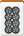
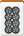 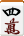
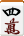
 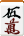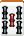
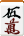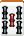
理牌後:
理牌不一定要按照某種既定的順序，總之自己看起來方便就可以；此外也不見得要像上圖所示的那樣把牌的方向轉正，實際打牌的時候通常牌的方向都是有正有反，不需要刻意調整成一定的方向。也有人會故意不理牌，以免別人根據他丟牌的位置來推測他的手牌。但是在最後宣告胡牌的時候，一定要將牌理好，讓別人看清楚是真的胡牌了。
隨著遊戲的進行，玩家可能會需要做好幾次理牌的動作，以調整整個胡牌方針。玩家可以隨時動手調整自己手牌的順序，只要小心不要把自己的牌意外推倒就行了。
電腦麻將遊戲通常會自動進行理牌，一般是根據「萬子筒子索子風牌三元牌」的順序排列，數字由左到右。近來也出現了一些比較精緻的遊戲可以讓玩家自己理牌，相當有真實感。
但有些電腦麻將遊戲因為畫面解析度不足，沒辦法以六張一排的方式排列，故有些會改採十二張一排或九張一排等等的權宜方式。但實際遊戲的時候應採用六張一排才是標準作法。
摸打
之前已經概略提過，一局的麻將遊戲是經過許多次的摸打過程後看誰先胡牌。
精確而言，其過程是這樣進行的。一開始東家會先把手上的十四張牌挑一張丟掉，正面朝上放在自己面前的河的地方，這稱為打牌或捨牌、又俗稱為丟牌。接下來，輪到他的下家從壁牌上面按照取牌的順序接續下來拿走一張（稱為摸牌），必要的話將摸來的牌放進自己手牌當中適當的位置，然後挑一張打出。之後就是繼續輪到下一個玩家摸牌並打牌、依此類推。
在日本麻將一般的制度中，每個玩家丟出來的牌應該要以六張一排的形式、先從左到右、再由前往後地整齊放在自己面前的河裡（這稱為「六枚切り」），這跟其他許多麻將是將牌隨便亂丟到河裡有很大的不同。這個機制是為了方便確定振聽（底下解釋）是否成立用的，相當重要，因此牌不可亂丟。日本麻將將丟出的牌整齊排列製造出了一種井然有序的美感，這是我個人很喜歡日本麻將的其中一個理由。
打出去的牌通稱為捨牌。
除非玩家之間特別約定，不然丟牌的時候一般而言並不需要說出自己丟出的牌之名稱，玩家有義務自己看清楚其他玩家打出的牌是什麼。此外跟手牌一樣，丟出去的牌不需要刻意調整正反方向。
一個玩家摸打之後，除非有人叫牌（底下解釋），不然就是輪到他的下家摸打。四個玩家輪流摸打一次稱為「一巡」，在通常的規則版本中，如果有人叫牌改變摸牌順序，那一巡就被破壞，有些跟一巡相關的東西會因此而無法成立（例如「一發」，見後文）。
叫牌（「鳴く」或「喰い」）
在麻將遊戲進行的過程中，湊成胡牌所需要的牌之來源不完全是由自己摸牌摸進來的，別人丟出的牌也有可能是來源。在遊戲當中，玩家可以對其他人丟出的牌進行吃、碰、槓三種叫牌的動作，底下分別說明。
吃
假設手牌中有兩張牌只要再多一張就可以形成順子，而此時自己的上家剛好丟出了可以湊出順子的牌，那麼就可以喊一聲「吃」，此時要將自己手中用來湊順子的兩張牌打開，然後把要吃的牌從上家的河裡拿走，跟自己的兩張並排成一列放在自己右手邊的桌框旁。不過要注意的是吃來的牌必須擺成橫的、放在左側（這表示這張牌是從左邊的玩家、也就是從上家手中得到的）。
舉例來說，假設進行到一半時自己的手牌如下：


 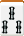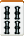
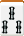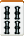
其中四六萬只要再多一張五萬就可湊成順子、七筒可跟六八筒湊，一索可以跟二三索湊，而四索則可以和二三索湊順子、也可以用三五索湊。因此，這個時候假如上家丟出五萬、七筒和一四索，那就可以考慮吃牌。我們假設上家丟了七筒，而我們要吃牌，那麼就會變成如下的形式：


其中那個七六八筒是平放攤開放在自己右手邊的桌框旁的。這種透過叫牌得到的、攤開放在桌子旁邊的面子稱為「副露」。一旦做出副露，在之後的牌局就不能夠更動，玩家如果要胡牌就一定要把那個當作是其中一個面子，無法變更組合。
吃完牌之後，吃牌的玩家必須自己打出一張牌，如果丟出的牌沒有人叫牌，那就輪到吃牌的下家繼續做摸打。
在吃牌的時候，也可以選擇把手牌中已經湊好的順子拆掉做出新的順子。例如假設手中已經有四五六索的順子，而上家丟出七索，我們可以考慮用五六索去吃那張七索（如果我們的目標是三色同順就有可能這麼做，見後文）。但是需要注意的是，在這種拆掉既有的順子去吃牌的情況中，我們不能立刻把原有順子多餘的牌（在此是四索）丟出，這種行為稱為「叫牌換牌」（喰い替え）， 在大部分的規則版本中是不允許的。但是在等到下一次自摸之後，我們就可以把四索丟掉。
最後要記得的是，吃牌永遠只能吃上家丟的牌，這跟碰與槓是不同的。
碰
如果手牌中已經有一個對子，此時其他玩家丟出了同樣的一種牌，那麼就可以喊一聲「碰」，將三張牌類似於吃地並排放在桌框旁邊。在擺放碰出來的副露的時候，如果是碰上家、就把左邊的牌橫擺，如果是碰對家、橫擺中間的牌，而如果是碰下家就橫擺右邊的牌。 舉例:
 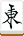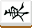
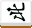
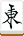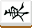
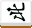
例如上面就是碰牌之後的擺放方式，由這個擺放我們可以得知這個玩家在牌局進行的過程中先碰了下家的北風、之後又碰了對家的東風。這種藉由碰牌所得到刻子稱為「明刻」，也是副露的一種，而藉由摸牌所得到的稱為「暗刻」，例如上面的例子中，就有一個五索的暗刻。此外，如果胡牌型是當中有一個刻子是藉由榮和（底下解釋）得到的，那麼那個刻子也算是明刻，而非暗刻。
碰完牌之後一樣要打出一張不要的牌，如果該牌沒被叫牌、那就由碰牌者的下家繼續摸打（因此如果有人叫碰的話，那麼可能會有玩家因此被跳過，底下的槓牌也是如此）。
碰牌必須在別人丟牌之後立刻喊，如果下一個玩家已經摸打就來不及了。另外，碰比吃要優先，也就是說如果一個玩家丟牌之後他的下家喊「吃」而另外一個玩家喊「碰」的話，那只有碰算成立。
基於不准「叫牌換牌」的規定，假如手中已經有三張一樣的牌構成暗刻而又去碰另外一張，那麼不能立刻把多出來的那一張丟掉，至少要等下一次才能丟。
有些時候玩家會考慮要不要叫碰，因此在他家丟出他可以碰的牌的時候要求等一下以讓他考慮，但這並不是好習慣，因為這麼一來就算到最後決定不碰，也會讓別的玩家知道你手中至少有該牌的一個對子。因此，最好事先就先決定好萬一有人丟牌出來的時候要不要叫碰。槓牌的情況也是類似。
槓
槓子是一種特殊的面子。順子跟刻子都是三張一組，而槓子卻是四張一組。槓子一定要宣告槓才能算是一個面子，如果藏在手牌當中，是不能當作一個面子的，頂多只能當作一個刻子和一張額外的牌（當然這張牌有可能跟另外兩張牌構成順子）。有三種方法可以製造出槓，分別是大明槓、加槓與暗槓。底下分別說明之。
所謂的大明槓，是指手牌中已經有一個暗刻，而此時別的玩家又丟出了同樣的牌時，就可以喊一聲「槓」，並用這個暗刻和他家丟出的牌湊出槓。槓的擺法跟碰類似，如果是槓上家就橫擺左邊、槓下家就橫擺右邊，至如槓對家的話，橫擺中間哪一張都可以，沒有差別。 舉例:
 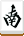
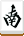
例如在上面的例子當中，這個玩家就槓了他對家的牌，組成槓子。大明槓也是一種叫牌行為，至於底下要講的加槓和暗槓，因為是玩家自身的操作，不算是叫牌的一種。
加槓（又稱為小明槓）是指事先已經碰出了一個明刻，而之後假如又自己摸進了同樣的一張牌，那麼就可以喊一聲「槓」，把這張牌追加到明刻上面，擺成一個槓。加槓的擺法是把追加的牌橫擺在原本已經橫擺的牌前面，如下圖所示。 舉例:
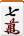
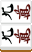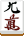
從這個擺法當中我們就知道，這個玩家是先碰了上家組成明刻，然後之後又加槓變成槓的。要注意的是加槓的牌一定必須是自己摸進來的，如果是別人丟出的牌是不能加槓的。
玩家不一定要在摸進第四張牌的時候立刻加槓，他可以選擇在之後的任何一次自摸之後再進行加槓。甚至，玩家有可能是本來就已經有一組暗刻，但是在別人丟出同一張牌的時候他基於戰術考量故意不喊槓而是喊碰、碰出了明刻，之後才加槓，這樣也是可以的。
藉由大明槓和加槓所得到的槓都算是明槓，都是副露的一種。而底下的暗槓則不算是副露。
可以暗槓的時機是玩家自己摸進了四張一樣的牌，在這種時候，玩家可以在摸進第四張牌之後喊一聲「槓」，然後把四張牌類似副露一樣地擺在桌邊形成暗槓。暗槓的擺法是把中間兩張攤開、左右兩張蓋住。習慣上，在暗槓之前最好先把四張牌都讓別人看一下，確定這真的是一個槓。 舉例:
上面這個就是暗槓的樣子。
跟加槓類似，暗槓也不一定要在湊齊四張的時候馬上槓牌，玩家可以自己選擇在任何一次自摸之後槓牌。不過要注意的是，無論是暗槓或加槓，時機都只有在自摸之後，不能在例如吃牌或碰牌之後選擇槓牌。
暗槓跟副露合稱為曝光牌（晒した牌），曝光牌都是不可變更組合的牌，玩家不能把牌重新跟其他手牌組合，也不能把曝光牌丟掉。
無論是上述三種槓法的哪一種，在槓完牌之後都要進行幾個動作。首先槓牌的玩家要把王牌當中已經開過的懸賞指示牌右邊的牌跟著打開，變成新增的懸賞指示牌、稱為槓懸賞指示牌（見後文）；接下來他必須摸走一張嶺上牌（摸的順序跟一般的摸牌一樣，只不過是從最後一幢倒著回來拿）。摸完嶺上牌之後，如果沒有胡牌，那就一樣要把手牌當中挑一張丟掉、然後繼續由他的下家進行摸打。
或者，如果情況許可，他也可以在摸完嶺上牌之後再次進行加槓或暗槓（不一定要用到剛才摸的嶺上牌，可以是用其他原先就在手牌中的牌），此時就再打開一張新的槓懸賞指示牌、然後再摸一張嶺上牌……如此直到他打出一張牌為止。這就是所謂的連續槓。
除此之外，現代比較主流的規定是，每當在有人叫槓、摸了嶺上牌之後，必須要把壁牌的最後一張也歸類成王牌，也就是說可以摸的壁牌就少了一張，王牌的張數始終維持十四張。也有一些規則版本是不用補王牌，嶺上牌摸走就算了。甚至有些規定是槓了之後要補兩張王牌的也有。
現代比較主流的規則是在自摸嶺上牌之前開槓懸賞指示牌、也就是剛才所說的方式，這種方式稱為「即乘」（即乗り）。而有另外一套規則是，在明槓的場合必須等到槓的人打牌了之後才開槓懸賞指示牌、或者甚至是一律在打牌之後才開；這種打牌之後才開槓懸賞指示牌的作法就稱為「後乘」（後乗り）。在採用後乘制度的時候會導致一些細部的規定分歧， 例如嶺上開花、槓振（見後文）或連續槓的話要如何……等等，比較複雜。
不過某些電腦麻將遊戲基於低解析度的緣故會將槓牌做一些比較不正式的擺放（例如把牌疊起來之類的），但是真正在進行遊戲的時候應該要採用這邊所說的擺法才是正確的，應特別注意。
關於副露
在某些比較廣義的說法當中是把暗槓也算做副露，可是這樣的講法會造成一些定義上的衝突，因此這邊我們還是採用狹義的副露定義，並且引入曝光牌這個術語。
海底牌和河底牌
所謂的海底牌就是壁牌當中的最後一張，四個玩家當中只有一個人能摸到。假設最後一個玩家在摸了海底牌之後沒有胡牌，那按照同樣的摸打規矩他應該要打出最後一張牌以結束這一局（到了那種時候就算流局，見後文），這張最後打出去的牌稱為河底牌。
在一般的規則當中，海底牌有個特殊的規定，就是摸了海底牌之後不能加槓或暗槓；類似地，對於最後打出來的河底牌，也不能對河底牌叫吃、碰、或槓，但是可以榮（底下解釋）。
叫牌修正（食い直し）
叫牌修正指的是對自己曾經丟過的牌再次叫吃或碰（槓當然不可能）。在大部分的規則中這是可以允許的，但也有些版本中不行。
聽牌與胡牌
了解了牌局是怎麼進行的之後，接下來我們先概略談一下聽牌與胡牌的觀念。
聽牌（聴牌）
所謂的聽牌，意思就是指手牌呈現出只要再加一張就可以成為胡牌型（四面子一雀頭、七對子或國士無雙，見後文）的意思，組出來的胡牌型沒有役也算是聽牌。而所有可以跟這組手牌組成胡牌型的牌種就稱為是這組手牌所「聽」的牌。 例如：


這組手牌只要再加入二索、五索、八索的任何一張都可以構成四面子一雀頭的胡牌型，因此我們會說這組手牌已經聽牌、聽的是二五八索。聽三張牌的狀況稱為「三面聽牌（三面待ち）」或「三面張」，類似地聽幾張牌就叫做幾面聽牌或幾面張。
要記得的是曝光牌（副露與暗槓）都是既定的面子，不可以和其他的手牌重新組合搭配。例如上面的牌如果改成：
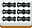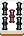
那這樣就只有聽二五索，因為五六七索這個順子是副露，不能夠拆開重新組合。
有的時候聽牌的組合可能會比較複雜一點， 例如：
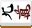
這組手牌就呈現六面聽牌的狀態，聽的是一二三四五八萬，每一張都可以導致一種不同的四面子一雀頭構造。
聽牌是指再進一張就可以變成胡牌型，而相對地所謂的「一向聽」是指再進一張就可以聽牌，「二向聽」是指再進一張牌就可以一向聽……依此類推。
自摸
假設已經聽牌，而且此時摸到了一張聽的牌的話，這種情況就叫做自摸，玩家可以自己決定是否要胡牌。如果要胡，就喊一聲「自摸」，然後把手牌推倒讓別人確定自己已經胡牌，這一局便到此結束。這種胡牌方式稱為「自摸和」。
自摸的時候玩家有的時候會為了做出更大的役而故意不胡牌，這是可以的，但是玩家在做這種決定的時候應當要考慮到振聽的問題（底下解釋）。
此外需要注意的是，如果自摸，必須把摸進來的牌獨立地放在手牌之外，不能夠放進手牌裡面，這是為了方便確定玩家到底是以何種形式胡牌（後面我們會再更仔細地解釋原因）。
榮（栄）
在任何時候，如果別的玩家丟出來的牌剛好可以跟自己的手牌湊出胡牌型，那麼這個時候就可以喊一聲「榮」，把自己的手牌推倒攤開，讓人確定自己的手牌確實跟那人丟出來的牌湊出胡牌。這樣的胡牌方式稱為「榮和」，榮了之後這一局一樣結束。
榮的時候必須在該玩家丟出牌之後立刻喊，如果一時沒察覺，等到他下家都摸牌並丟牌之後，就來不及了。因此如果已經聽牌，那麼就要多多留神是否可以榮別人。
如果丟出去的牌被別人喊榮，我們會說這張牌或者這個玩家「放槍」（放銃）了。
榮比叫牌的動作都來得優先；也就是說如果某個玩家丟牌之後有玩家喊吃碰或槓、另外一個玩家喊榮的話，那是榮的那個玩家成立。此外有的時候可能會出現一個人丟牌而有兩個以上的其他玩家喊榮，這種情況我們等到後面再說明。
不過如同前面說過的，無論是自摸和還是榮和，都必須滿足一些對應的條件，不是只有構成胡牌型就夠了。胡牌最主要的條件是必須要有滿足飜數限制的役（見後文），其次就是不能在振聽的情況下榮和；底下我們先略為解釋一下振聽。
振聽（振り聴）
振聽規則是日本麻將的一個重要特色。如果振聽的話，玩家就不能從別的玩家手中榮牌，一定要自摸才能胡牌（如果振聽還榮和的話就算犯規，見後文）。振聽包含了三種情況，底下分別敘述之。
第一種情況是，玩家已經聽牌，可是聽的牌當中至少有一張是玩家曾經丟過的。舉例來說，以剛才的六面聽牌為例：
這組牌聽的是一二三四五八萬，而假設這個玩家在先前曾經丟過八萬，那麼接下來就算算別的玩家丟出他所聽的牌（即便不是八萬），他也不能喊榮。除非他自摸，不然這個牌是不能胡的。
但是，這個玩家可以設法藉由改變聽牌結構來解除這個振聽的問題，例如，假設他這個時候摸進了七萬，並且將三萬丟掉：
那麼這個時候，這副牌就變成是聽四七萬，雖然聽牌的張數變少，可是此時他就已經沒有振聽的問題，如果接下來別人丟出四萬或七萬，他是可以榮的。是否要做這樣的更動，需要看玩家自己的判斷。
第二種振聽的狀況是，玩家已經聽牌，這個時候別人丟出了該玩家所聽的牌的其中一張，可是他沒有喊榮。
這有三種可能，一種是他實際上根本不能喊榮（假定那樣會導致他榮了沒有役的牌），另一種是他想要胡比較大的牌型，最後一種就是他其實根本沒看到。但是無論如何，由於他沒有喊榮，他就形成了振聽。
然而，這種振聽解除的速度很快，只要等到振聽的玩家下一次自摸之後，這種振聽就解除了（這稱為「山越し」）。可是在那之前，如果又有別的玩家丟出了他聽的牌，他是不能喊榮的。
也有的規定是說，雖然還沒輪到振聽的玩家自摸，但是如果有人此時叫牌的話也算解除振聽。
最後一種振聽的情況是所謂的立直後漏看（立直後の見逃し），這個我們等到講到立直的時候再解釋。
為了避免發生振聽的狀況，玩家在聽牌的時候應該要仔細想清楚自己聽的牌到底有哪些，才不會因為疏忽而導致振聽或甚至錯和。幸好，絕大多數的情況中手牌到底聽哪幾張都是很明顯的，像這邊舉的這種不是那麼容易立刻看出來的多面聽牌一般來講是沒那麼容易出現的。
另外一種新手很容易疏忽的振聽是忘記自己丟過但是被叫牌叫走的牌，那些牌也算是曾經丟過的，只是不在河裡而已，因此很容易忘記。日本麻將要把副露擺成很明顯可以看出牌是從誰身上取得的，就是為了要標示出哪些牌是誰丟的。